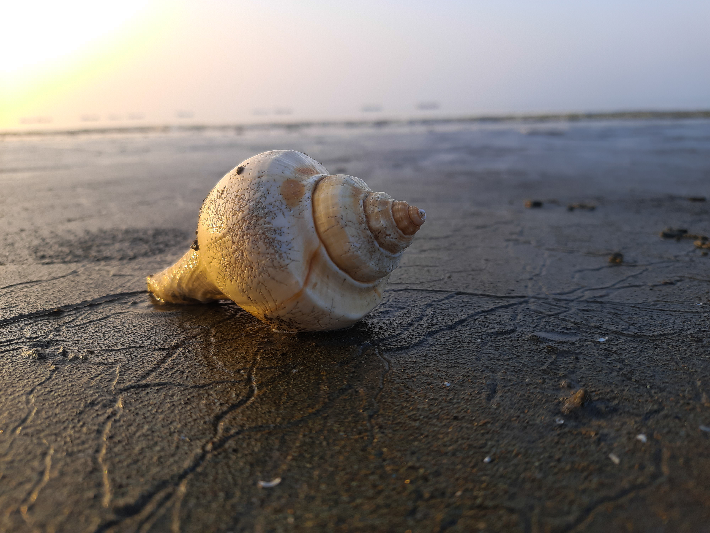

RESOURCES
Sea Shell in Kuakata Sea Beach. Source: Wikimedia
Images:
- 1. Setiawan, Fakhrizal. Wakatobi Seascape. 2019. Wikimedia.org. Accessed 28 April, 2025.
- 2. NOAA. A Pteropod Shell is Shown Dissovling Over Time. 2020. Wikimedia.org. Accessed 28 April, 2025.
- 3. Uddin, S.M.M.Musabbir. Sea Shell in Kuakata Sea Beach. 2023. Wikimedia.org. Accessed 28 April, 2025.